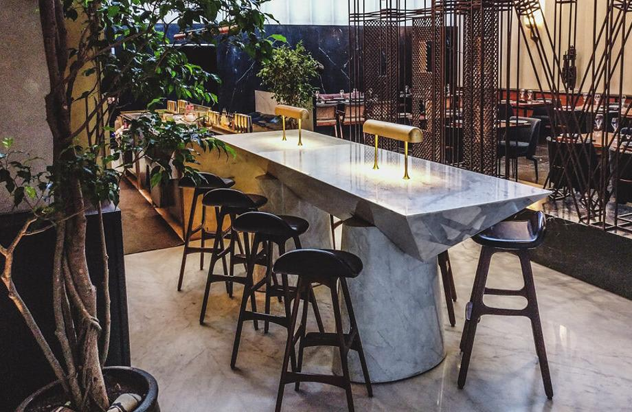
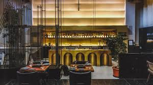
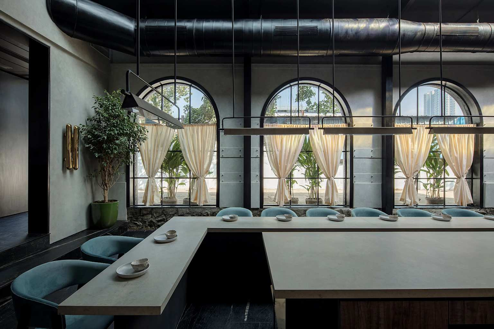
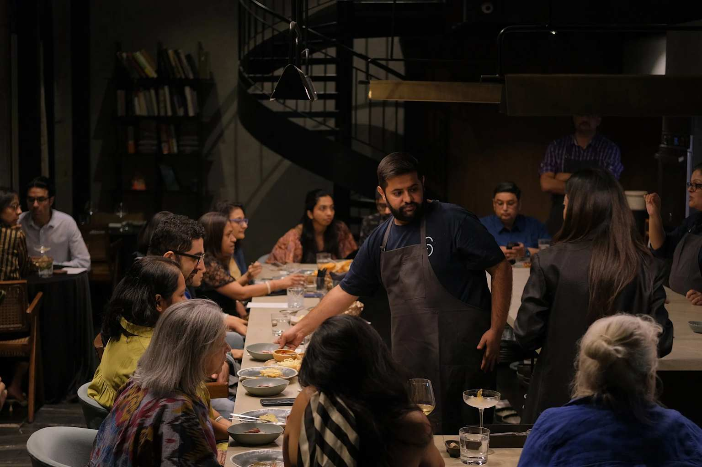
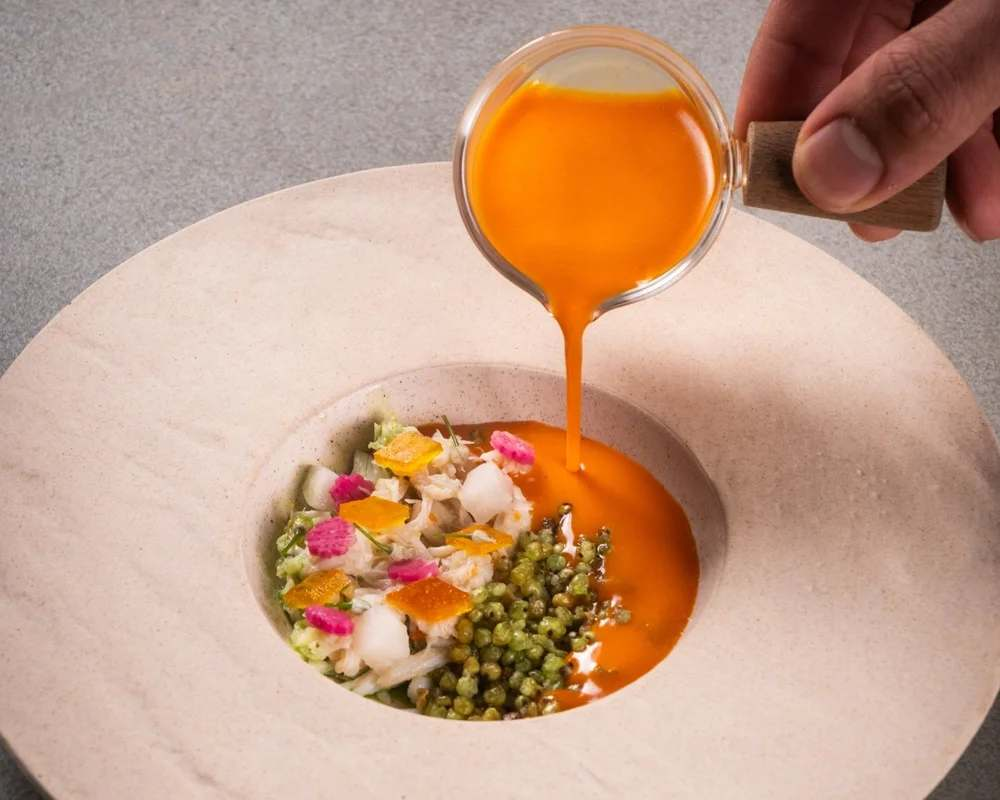
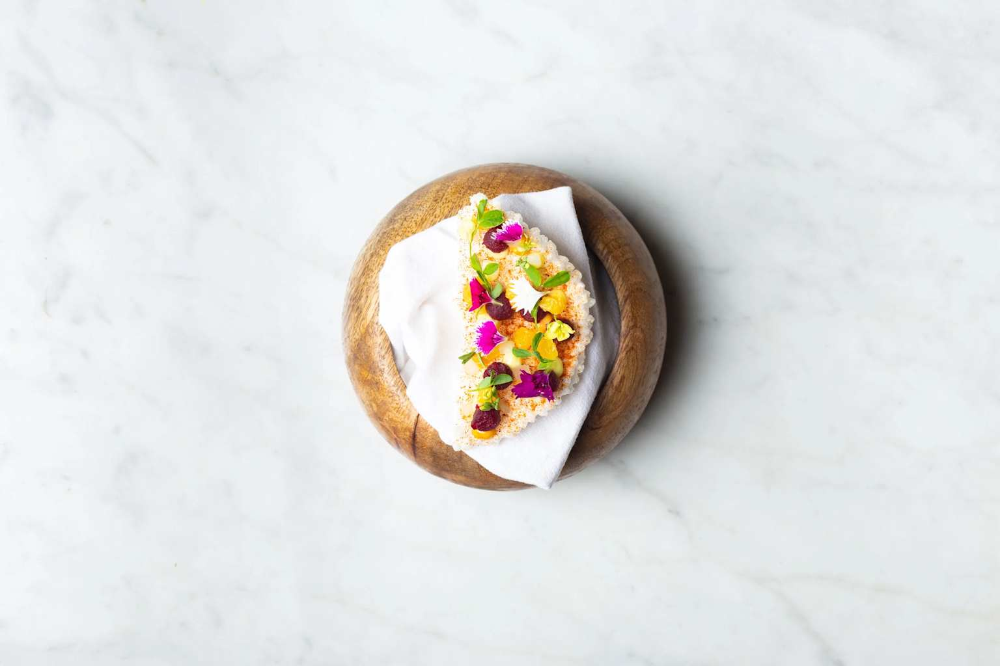
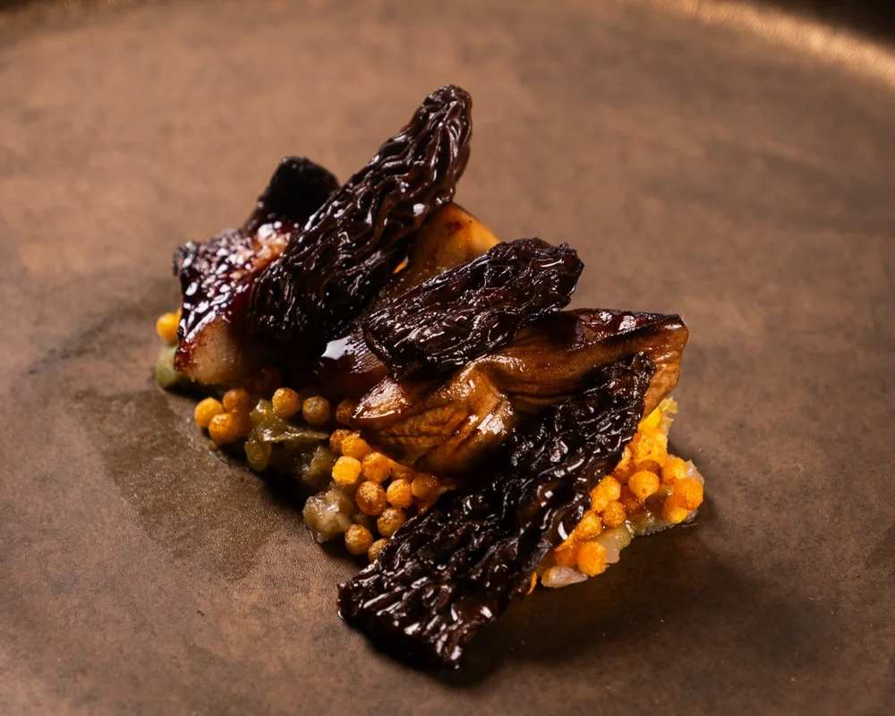
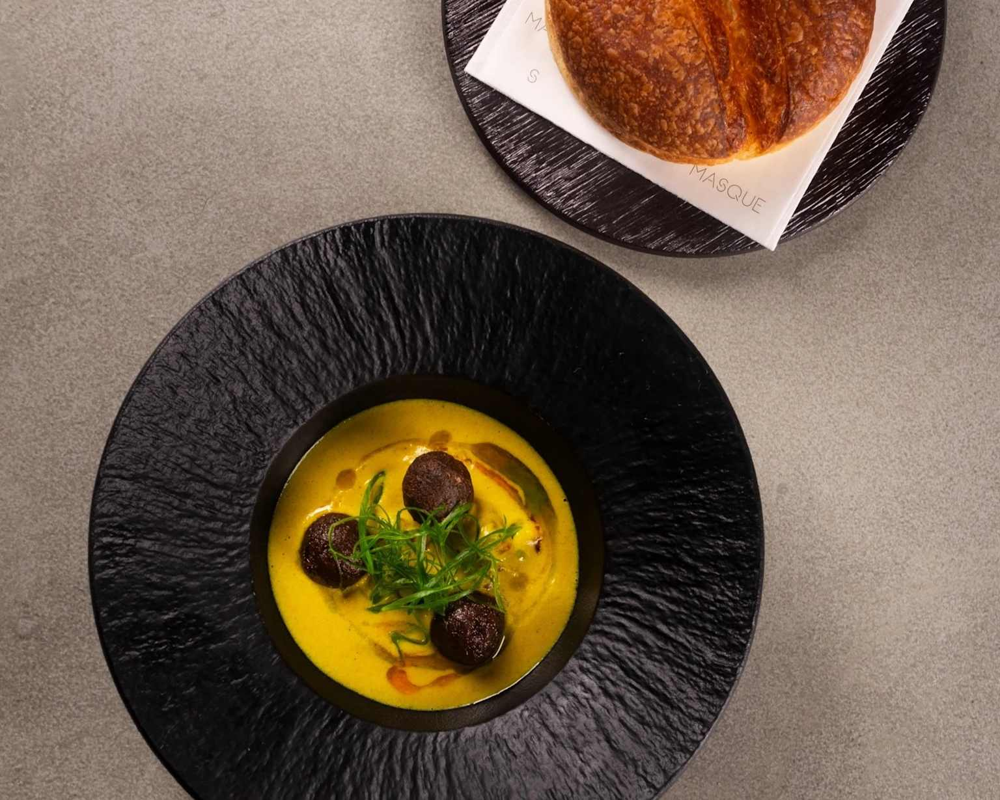
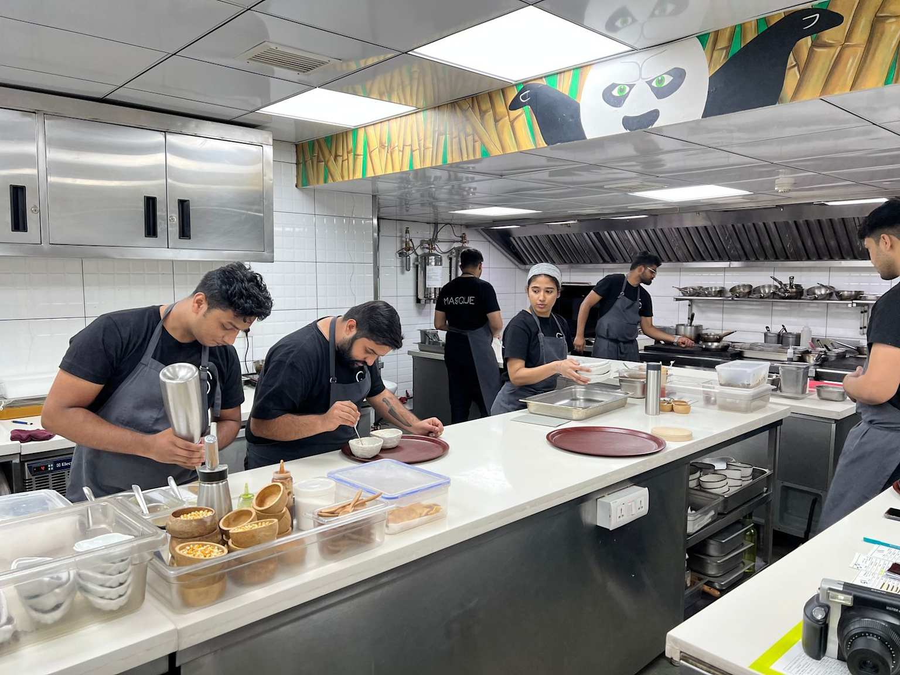

A sleek, mill‑inspired dining room with high ceilings, arched windows, and a restrained palette of concrete, wood, and metal, creating a refined yet grounded atmosphere.


The main dining area and the intimate Masque Lab both feature an open‑kitchen concept, where chefs cook in full view against a backdrop of raw industrial textures and natural light.


Highly artistic plates that turn Indian ingredients into sculptural compositions: bold soups, glazed mushrooms, colored vegetables, and edible flowers arranged on minimalist porcelain or stone.




Each course is framed as a small “moment”—close‑ups of sauces being poured, garnishes being placed, or finished plates against neutral backgrounds to emphasize texture and color.
Behind‑the‑scenes shots of the kitchen team working around stainless‑steel counters, test‑tube‑style equipment, and a playful mural of Po the Panda, underscoring the blend of precision and fun.

Candid moments of guests and chefs at Masque Lab, gathered around a long table under warm pendant light, telling the story of collaboration between producers, cooks, and diners.
Terms of Service
Privacy Policy
Refund Policy